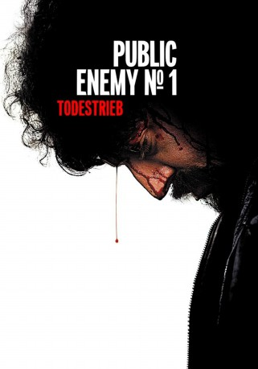

#1303 Public Enemy No. 1 - Todestrieb
Alternativ: Mesrine Part 2: Public Enemy #1 (Englischer Titel)
 
 IMDB-Wertung: 7.5 / 10
IMDB-Wertung: 7.5 / 10  Metascore: 72
Metascore: 72 
Frankreich in den siebziger Jahren: Jacques Mesrine ist durch seine zahlreichen Straftaten in Frankreich und Kanada längst zur Legende geworden. Zu einer Legende, die nach Meinung der Medien den Titel „Staatsfeind Nr. 1“ verdient. Keine Bank ist vor ihm sicher und weder Handschellen im Gerichtssaal, noch ein Hochsicherheitsgefängnis können ihn langfristig außer Gefecht setzen. In seiner Autobiographie „Der Todestrieb“ gesteht er 40 Morde, unzählige Banküberfälle und noch vieles mehr. Die Polizei bleibt bei seinen neuen Eskapaden alles andere als untätig und kommt ihm immer dichter auf die Fersen. Auch wenn Mesrine sich anscheinend von Anfang an der Tatsache bewusst war, dass er nicht an Altersschwäche sterben würde, dürfte er sein Ende wohl kaum derart grausam vorausgeahnt haben.
Jahr: 2008
Dauer: 133 Minuten
FSK: 16
Land: Frankreich Studio: Senator FilmTonspuren:
Untertitel: Deutsch,
Auflösung: 720p (1280x544) Größe: 5601 MB
Genre: Action, Biographie, Krimi, Drama, Thriller
Regisseur: Jean-François Richet
Drehbuch: Abdel Raouf Dafri, Abdel Raouf Dafri, Jean-François Richet
Soundtrack: Marco Beltrami, Marcus Trumpp
Darsteller:
 Vincent Cassel als Jacques Mesrine
Vincent Cassel als Jacques Mesrine Ludivine Sagnier als Sylvia Jeanjacquot
Ludivine Sagnier als Sylvia Jeanjacquot Mathieu Amalric als François Besse
Mathieu Amalric als François Besse Samuel Le Bihan als Michel Ardouin
Samuel Le Bihan als Michel Ardouin Gérard Lanvin als Charlie Bauer
Gérard Lanvin als Charlie Bauer Olivier Gourmet als Le commissaire Broussard
Olivier Gourmet als Le commissaire Broussard Anne Consigny als L'avocate de Jacques Mesrine
Anne Consigny als L'avocate de Jacques Mesrine- Laure Marsac als La journaliste interview
- Helena Soubeyrand als La copine arrestation
- Clémence Thioly als Princesse Christiane
 Elena Anaya als Sofia
Elena Anaya als Sofia Cécile De France als Jeanne Schneider
Cécile De France als Jeanne Schneider Gérard Depardieu als Guido
Gérard Depardieu als Guido- Roy Dupuis als Jean-Paul Mercier
 Olivier Schneider als Inspecteur , uncredited
Olivier Schneider als Inspecteur , uncredited Rupert Wynne-James als Client dans boite de nuit , uncredited
Rupert Wynne-James als Client dans boite de nuit , uncredited Georges Wilson als Henri Lelièvre
Georges Wilson als Henri Lelièvre Michel Duchaussoy als Le père de Jacques Mesrine
Michel Duchaussoy als Le père de Jacques Mesrine- Alain Fromager als Jacques Dallier - journaliste pour Minute
- Alain Doutey als Le président du tribunal à Compiègne
- Arsène Mosca als Jojo - un policier
- Christophe Vandevelde als Inspecteur Gégé
- Luc Thuillier als Le commissaire OCRB / Lucien Aimé-Blanc
- Serge Biavan als L'inspecteur SRPJ
- Pascal Elso als Le commissaire SRPJ
- Isabelle Vitari als La caissière
- Michaël Vander-Meiren als Le gendarme à Compiègne #1
- David Seigneur als Le gendarme à Compiègne #2
- Nicolas Abraham als Grangier
- Joseph Malerba als Robert
- Pascal Doucet-Bon als Journaliste Compiègne
- Emmanuel Vieilly als L'inspecteur au cimetière
- Myriam Boyer als La mère de Jacques Mesrine
- Pascal Liger als Le boxeur
- Gérard Jarrier als Gardien de la paix
- David Bursztein als Le tireur d'��lite gradé
- Fabrice de la Villehervé als Le gardien-chef
- Jean-Luc Muscat als Gardien prison de la Santé
- Vincent Jouan als Gardien prison de la Santé
- Eric Boucher als Gardien prison de la Santé
- Bernard Rosselli als Gardien prison de la Santé
- Philippe Le Dem als Gardien prison de la Santé
- Erik Forcinal als Le gardien avocat
- Fanny Sidney als Sabrina 16 ans
- Alain Rimoux als L'avocat général
- Olivier Pajot als Le président Assises Paris
- Olivier Barthelemy als Le codétenu évasion
- Rachel Suissa als Princesse Annie
- Xavier Letourneur als Le brigadier-chef Deauville
- Yan Brian als Directeur casino Deauville
Datei: X:\FSK18-2000-2009\Public Enemy No. 1 - Todestrieb (2008, FSK, 1280x544).mkv seit 16.06.2015
Festplatte: FSK18
 Es gibt insgesamt 106 Filme in der Gruppe 'FSK18-2000-2009'
Es gibt insgesamt 106 Filme in der Gruppe 'FSK18-2000-2009'